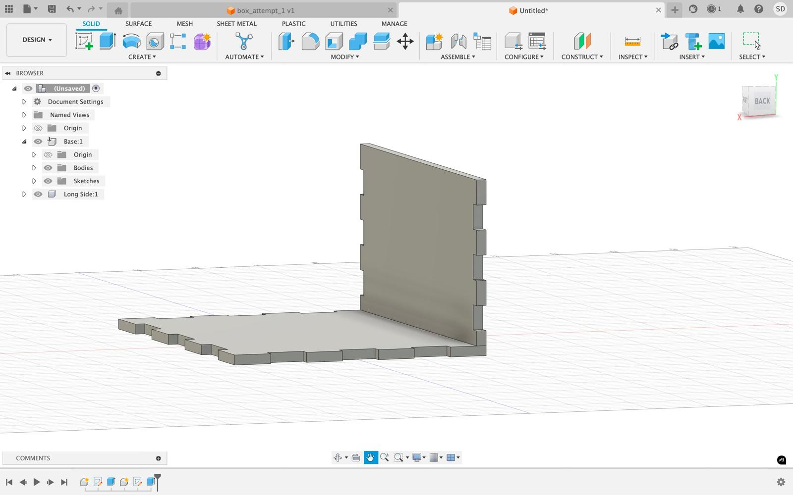

Week 2: 2-D Design & Laser Cutting
This week I focused on learning how to use Autodesk Fusion, drills, saws and lasers and vinyl cutters.
Box Design
Creating a three finger press joint box with a butterfly vinyl sticker from scratch (with the exception of the cardboard and vinyl material itself) was the greatest feat of my week! I watched the suggested finger press joint tutorial presented on the course website but chose to follow a different route by having finger joints around all five of my box’s sides (requiring different configurations for laser cutting and mechanisms for combining the sides), having my own measurements of the boxes and printing and adding a decorative vinyl sticker (a collection that I intend to build upon and embellish my box with over the course of the semester!)
Beginner’s luck never struck my laser cutting endeavors and my initial attempt at the box design and cutting process was unfortunately unsuccessful :( I did not realize that my CAD design when saved in the dxf format ended up having different dimensions than the ones initially intended for my box. and when clearing out my construction lines I ended up uploading a rudimentary sketch of my box’s base instead of the final sketch which resulted in an incongruous, extremely miniscule and widely disparate set of puzzle pieces instead of perfectly fitting and accounted for sides of a beautiful finger press joint box. The second attempt was much to my relief because I readjusted the sizes of my boxes sides, outlined them again, removed any duplicates and accounted for my dxf files properly which resulted in a very well jointed, finger-pressible box bejeweled endearingly with a red butterfly– the gift of a newly acquired understanding of vinyl sticker making.
This process frustrating at times was crucial in helping me find my way around fusion, around the lab and different equipment and machines. And overall being able to observe others and ask for help in the process (without which much of this process would not have been possible!)
Step 1

Step 2
Step 3
 Step 4
Step 4
Step 5
 Step 6
Step 6
 Step 7
Step 7
 Step 8
Step 8
Step 9
 Step 10
Step 10
 Step 10
Step 10
Step 3
Fusion 360
After watching all the advised video tutorials for Fusion 360, I took a stab at the press-joint box as a test of my abilities. Using Fusion for me has had a steep learning curve and I am now (after spending hours on end trying to fix the minutest of errors) getting comfortable with certain tools and functions, albeit foundational but necessary, on the platform. I was having trouble even holding down lines or simple sketches that I drew out but after multiple trial and error and after looking at tutorials (both recommended and recorded in the case of the press fit box) was able to cleanly create the press fit box.
Modeling 3D Objects
I chose to model my laundry basket and jewelry box in order to tinker with different functions and design tools in Fusion.
Laundry Basket: For my laundry basket I started out with building a circular bottom and an elliptical top connected by offsetting a new plane off of the former circle. After doing so I extruded and connected the two shapes to get the body of my laundry basket. In order to draw the curve around the top of the basket I then drew a 3-point arc which I symmetrically extruded inwardly and trimmed to get the bends around the rim of the laundry basket. From there I followed a similar process and drew an ellipse instead of a 3-point arc which I symmetrically extruded inwardly and trimmed to get room for holding my laundry basket. Now that my laundry basket was structurally sound I wanted to make holes on it which I started off with by drawing an ellipse around the basket’s bottom which traversed the bottom path of the basket using a circular pattern around the laundry’s basket path. I extended the pattern vertically using the rectangular pattern function and marked the boundaries of the basket’s end with a fillet to complete my basket.


Jewelry Box: To model my circular jewelry box with a threaded exterior I started off with drawing two circles in the same plane which I connected via extruding. Then I used the thread function to draw out the rings around its body, while trying my hands on other features such as mesh, and fileted it's rims on top and bottom to give it a polished look. I proceeded to focus on the interior by creating a hole to store my jewelry in the box and drawing its insides using the web command. After doing so I created a decorative and symmetrical pattern of spheres around the top of the jewelry box, done through a combination of mirror and pattern tools. At the end, I modified the physical appearance of the box and changed the colors and aesthetics of the box.